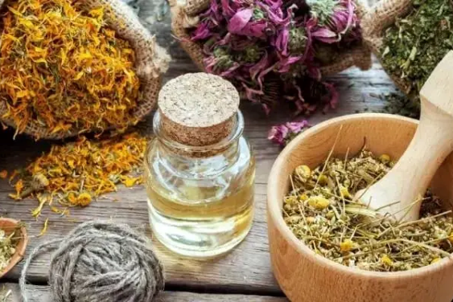

Food and Health
Real and Ultra-Processing Food

When we eat ultra-processed food, we must process chemical compounds such as dyes, stabilizers, preservatives, emulsifiers, etc.
They all have an acceptable intake, so a small amount will not harm health. But modernity has brought the habit of buying many almost ready-to-eat foods, which are very artificial and end up poisoning our body instead of nourishing it.
How can we reverse it? Eating fresh fruits and vegetables gives us more and better quality vitamins and minerals. In processed foods, these are lost in large quantities, so the companies add those as part of the formulation, but since they are artificial, bioavailability is low. So, we lose the amount and quality of these micronutrients, or they become less effective.
That is why it is better to eat less and of better quality. In addition, processed foods are low in fiber, which is essential for absorbing nutrients in our intestines. For this reason, it is healthy to eat cereals and flours with part of their shells, where there are also vitamins and minerals.
We must remember: In the variety of colors, there are a wide variety of nutrients!.
Food and Natural Medicine

In parallel, the same happens when we consume many medications; our bodies must metabolize many artificial substances. With this, I do not mean you should not take medication; because I must use traditional medicine for a medical condicion. Still, if the condition is not severe and can treat with medicinal herbs, they have been effective and without side effects.
Replacing medications with herbs is a good idea. Such as analgesics (turmeric), anti-inflammatories (chamomille), herbs syrups, and relaxants (valerian or lemon balm). Have given me good results without side effects, such as heartburn or increased blood pressure. These are only a few fantastic examples.
Having a list that tells us what is healthy and what is not would be easy, but if we listen to our body, it will guide us. Eating healthy is easier than it seems; the dishes are simple, full of colors, and varied. And remember: all plants and animals were created for the wise use of man.